Im Fitnessstudio wird trainiert. Findet die Dinge und sagt genau, wo sie sind. Danach gibt es eine Runde Tabu.
🔍 Suchbild📍 Wo? & Wohin?🔤 Tabu🗣️ Frei sprechen
Niveau wählen
Was gibt es alles zu sehen?
Schaut genau hin! Beschreibt reihum die Lage der Dinge so genau wie möglich.
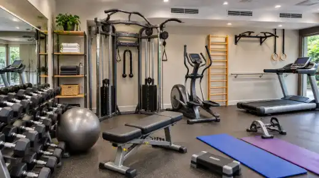
🔍 Such-Spiel: Eine Person nennt etwas aus der Liste — die anderen suchen es im Bild und beschreiben im ganzen Satz, wo es ist. Wer es zuerst richtig beschreibt, ist als Nächstes dran.
Findet diese Sachen
Tippt eine Karte an, wenn ihr das Ding im Bild gefunden und die Lage beschrieben habt.
🟦 der🟩 das🟥 die
📋 Die ganze Wortschatzliste
Alle Wörter zum Thema — für alle gleich. Das ist euer Wortvorrat für Tabu, Rate-Spiel und die Präpositionen.
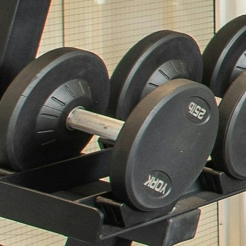
die Hantel
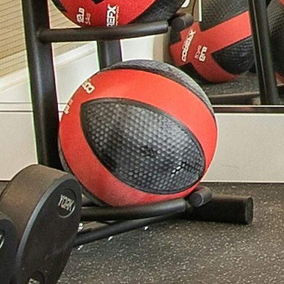
der Ball
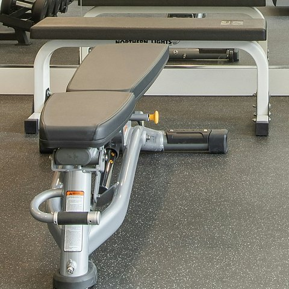
die Bank
die Lampe
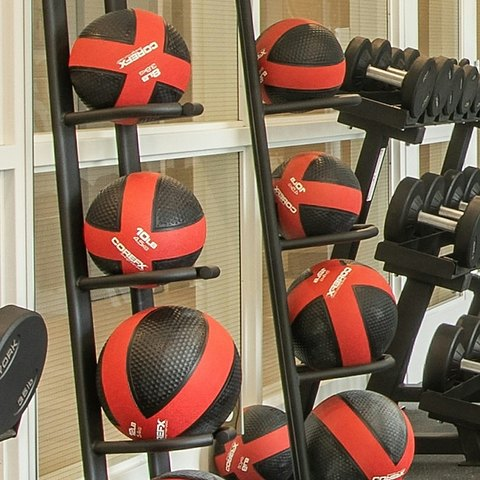
das Regal
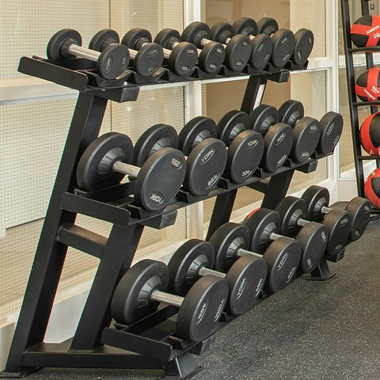
der Hantelständer
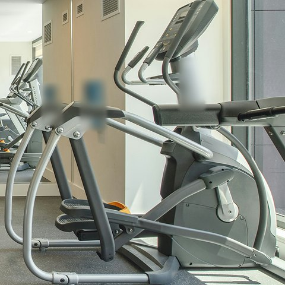
der Crosstrainer
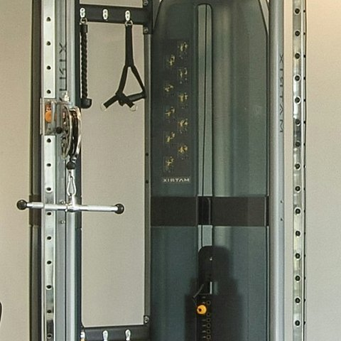
die Kraftstation
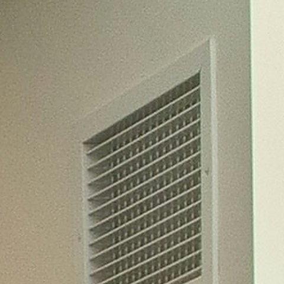
die Lüftung
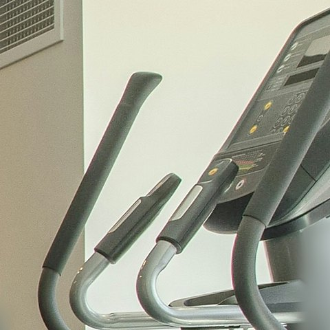
der Haltegriff
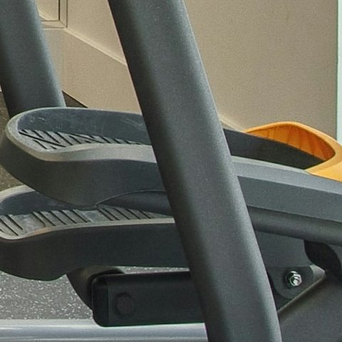
das Pedal
🎁 „Ich sehe etwas, das …"
Eine Person tippt auf „Neues Wort", sieht Bild + Wort und beschreibt nur mit Präpositionen, wo es ist — die anderen raten!
🤫 Dein geheimes Wort
Bereit?
Nur die beschreibende Person schaut · beschreibe die Lage, sag das Wort nicht!
🗣️ So beschreibst du: „Es befindet sich …" · „Es liegt / steht / hängt …" + Präposition + Dativ. Jeder Klick gibt ein neues, gemischtes Wort aus deinem gewählten Niveau (🟨 A2/B1 · 🟦 B1/B2 · 🟩 B2/C1).
📍 Präpositionen
Beschreibt die Lage der Dinge — die Übung passt sich eurem Niveau an.
Wo? → Dativ
Einfache Wo?-Fragen. Antwortet im ganzen Satz zum Bild.
auf
„Die Hanteln liegen auf dem Ständer.“
in
„Im Regal liegen rote Bälle.“
neben
„Neben den Hanteln steht ein Regal.“
vor
„Vor dem Spiegel steht eine Bank.“
an
„Die Lampen sind an der Decke.“
hinter
„Hinter der Bank ist ein großer Spiegel.“
🧠 Dativ-Artikel: der → dem · das → dem · die → der.
Wo? → Dativ
Frage Wo? (Lage) → Wechselpräposition + Dativ. Bildet zu jeder einen Satz zum Bild.
in
„Im Spiegel sieht man eine Kraftstation.“
an
„An der Wand ist eine Lüftung.“
auf
„Auf dem Hantelständer liegen viele Hanteln.“
über
„Über den Geräten hängen Lampen.“
neben
„Neben dem Crosstrainer steht ein Laufband.“
vor
„Vor dem Fenster stehen der Crosstrainer und das Laufband.“
hinter
„Hinter dem Hantelständer ist eine Glaswand.“
zwischen
„Die Bänke stehen zwischen dem Regal und dem Crosstrainer.“
🧠 Dativ-Artikel: der → dem · das → dem · die → der · Plural → den (+n).
Wohin? → Akkusativ
Etwas bewegt sich — Frage Wohin? (Richtung) → Akkusativ.
auf + Akk.
„Leg die Hantel auf den Ständer.“
in + Akk.
„Leg den Ball in das Regal.“
vor + Akk.
„Stell die Bank vor den Spiegel.“
🧠 Akkusativ-Artikel: der → den · das → das · die → die · Plural → die. Merksatz: Wo? = Dativ · Wohin? = Akkusativ.
Präzise beschreiben
Beschreibt die genaue Lage mit anspruchsvollen Präpositionen — gern mehrere Angaben in einem Satz.
oberhalb + Gen.
„Oberhalb der Geräte hängen kleine Lampen.“
innerhalb + Gen.
„Innerhalb des Regals liegen sieben rote Bälle.“
inmitten + Gen.
„Inmitten des Raums stehen zwei graue Bänke.“
gegenüber + Dat.
„Gegenüber dem Hantelständer steht der Crosstrainer.“
entlang + Gen.
„Entlang der linken Wand steht ein langer Hantelständer.“
mehrteilig
„Rechts vorne, direkt vor dem großen Fenster, steht ein Crosstrainer mit zwei langen Haltegriffen.“
🧠 Genitiv-Präpositionen: oberhalb / innerhalb / inmitten / entlang + Genitiv (des / der). gegenüber steht mit Dativ. Kombiniert sie für präzise Beschreibungen.
🔤 Tabu
Erkläre das Wort oben — aber ohne die verbotenen Wörter! Jeder Klick gibt ein neues, gemischtes Wort aus deinem gewählten Niveau (🟨 A2/B1 · 🟦 B1/B2 · 🟩 B2/C1).
Erkläre dieses Wort
Bereit?
🚫 Diese Wörter sind tabu
Tippe auf „Neue Karte"
⏱️ Spielidee: 60 Sekunden pro Runde. Für jedes erratene Wort einen Punkt. Verbotenes Wort benutzt → Karte futsch. Zwei Teams!
🗣️ Frei sprechen
Sprecht frei — nutzt den Wortschatz aus dem Bild. Die Fragen passen sich eurem Niveau an.
A2/B1
Bild
Was siehst du auf dem Bild? Nenne fünf Dinge.
Sport
Welchen Sport machst du gern?
Übungen
Welche Übungen kennst du? Nenne drei.
Alltag
Wie oft trainierst du in der Woche?
B1/B2
Sport
Treibst du Sport? Was und wie oft?
Fitnessstudio
Gehst du ins Fitnessstudio — oder trainierst du lieber draußen?
Motivation
Was motiviert dich, Sport zu machen?
Diskussion
Muss man ins Fitnessstudio, um fit zu bleiben?
Frage-Runde
Stell deinem Partner 3 Fragen zu seinem Sport-Alltag.
Geschichte
Erfinde eine Geschichte: der erste Tag im Fitnessstudio.
B2/C1
Diskussion
Sind Fitnessstudios reine Geldmaschinen oder echte Gesundheitsförderer? Begründe deine Meinung.
Zukunft
Wie trainieren wir in zwanzig Jahren? Was ersetzt das klassische Studio?
Gesellschaft
Warum ist der Körperkult heute so stark? Nimm Stellung.
Monolog
Beschreibe zwei Minuten lang das Bild so genau, dass dein Partner es zeichnen könnte.
🔑 Redemittel: „Ganz vorne / hinten sieht man …", „Direkt daneben …", „Links / rechts von … befindet sich …", „Im Vordergrund / im Hintergrund …"
🏆 Das große Quiz
Mehrere Runden rund ums Fitnessstudio: Wortschatz, Artikel, Wo? & Wohin? und Trainings-Alltag. Pro Frage gibt es genau eine richtige Antwort — das Quiz passt sich eurem Niveau an.
Runde 1 · Frage 10 von 6
🏅 Als Wettkampf: Zwei Teams, abwechselnd. Wer die richtige Antwort hat, muss zusätzlich einen eigenen Satz mit dem Wort bilden — erst dann gibt es den Punkt.